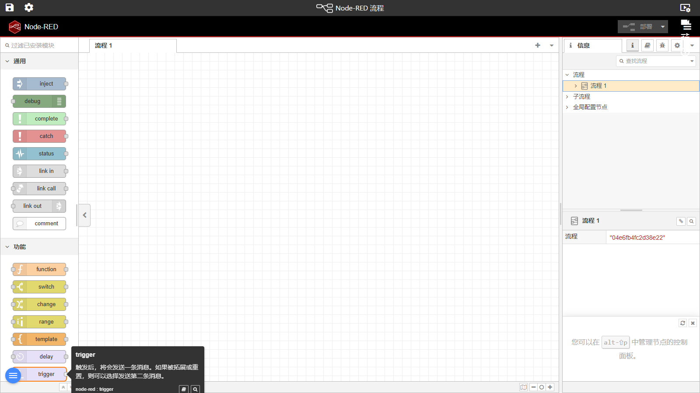

10. 工作流 Node-RED
入口：左侧菜单「工作流」 · 路由 /flows · 页面内嵌 Node-RED 编辑器（/nodered/） · 编辑器界面为简体中文
功能概述
工作流页把业界流行的 Node-RED 流程编辑器完整嵌入本平台：左侧节点面板、中央画布、右侧信息/调试面板一应俱全，界面已汉化为简体中文。用它可以把设备数据、报警、HTTP/MQTT 接入、计算与推送编排成自动化流程，点右上角「部署」即刻生效。离开该页时，平台会自动保存当前工程。
界面说明

图 10-1 工作流 Node-RED 编辑器（当前交付版实际截图）
| 区域 | 说明 |
|---|
| ① 页面标题栏 | 平台页眉显示「Node-RED 流程」标题，其下为内嵌的编辑器 iframe（地址 /nodered/）。 |
| ② 节点面板（左侧） | 按类别分组的节点库（常用、网络、序列、功能、解析、存储等中文分类），顶部有筛选输入框；把节点拖到画布即创建实例。 |
| ③ 画布（中央） | 流（标签页）+ 网格画布。节点间用连线（wire）传递消息；可框选、拖动、复制节点；顶部标签栏可新增/重命名/删除流。 |
| ④ 信息与调试面板（右侧） | 「信息」页显示选中节点/节点的属性说明；「调试」页实时打印 debug 节点的消息，是排查流程的第一工具。 |
| ⑤ 工具栏（顶部） | 左起：部署菜单（部署 / 修改的节点 / 仅部署流）、删除流、列表视图/侧栏开关等；「部署」按钮为红色醒目按钮，未部署的修改会在此提示。 |
逐步操作
搭建第一个流程（示例：定时注入 → 调试输出）
- 点击左侧菜单「工作流」进入编辑器。
- 在②区节点面板找到「常用」分类下的「注入」节点，拖到③区画布。
- 再拖一个「调试」节点到画布。
- 把注入节点右侧的输出端口拖到调试节点左侧的输入端口，形成连线。
- 双击「注入」节点打开编辑对话框：设置重复间隔（如每 5 秒），点「完成」。
- 点击右上角红色「部署」按钮（或点其下拉选「部署」全量部署）。画布节点左上角的蓝色/红色状态点消失即部署成功。
- 打开④区「调试」面板：每 5 秒会打印一条注入消息。
修改并重新部署
- 双击任意节点修改配置，点「完成」。
- 点「部署」旁的下拉箭头，按需选择「完整部署」「修改的节点」或「仅部署流」以减少扰动。
导入 / 导出流程
- 菜单（右上 ☰）→ 「导入」：粘贴 JSON 流程代码后确认，节点出现在画布。
- 选中节点后菜单 → 「导出」：复制 JSON 与他人共享。
提示与常见问题
- 部署按钮是灰的？ 没有未保存的修改；改动画布后按钮自动变红可点。
- 流程跑不起来？ 先接「调试」节点看消息是否到达；再检查节点的配置（地址、主题、表达式）。
- 编辑器打不开 / 白屏？ 检查系统设置中 Node-RED 是否启用（nodeRedEnabled）以及 /nodered/ 是否可访问；当前交付为传统（开放）访问模式，无需额外登录。
- 我的流程存在哪里？ Node-RED 运行数据保存在工程目录 project\_appdata\node-red 下，随工程一起备份。
- 离开页面会丢修改吗？ 未部署的画布修改仍在编辑器内；离开 /flows 时平台会自动保存工程快照，但养成随手「部署」的习惯最稳妥。
← 上一章 · 返回目录 · 下一章 →